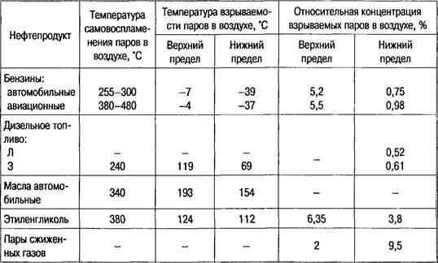

Тема 14
Токсичность и
огнеопасность основных эксплуатационных материало. Охрана окружающей среды
Все сорта топлива, смазочные материалы и специальные жидкости в той или
иной степени ядовиты (токсичны) и огнеопасны, а топлива и органические
растворители к тому же еще и взрывоопасны. Поэтому необходимо хорошо знать
основные экологические свойства АЭМ, т. е. те свойства топлив, смазочных
материалов и специальных жидкостей, которые воздействуют на человека и
окружающую среду и могут проявляться при хранении, транспортировании или
использовании. Рассмотрим наиболее важные из этих свойств: токсичность,
пожароопасность, взрывоопасность и способность электризоваться.
Токсичность
и огнестойкость автомобильных эксплуатационных материалов
На складах ТСМ и рабочих
зонах всегда существует вероятность того, что работник может подвергаться
воздействию опасных и вредных производственных факторов, к которым относятся:
— повышенная запыленность и
загазованность воздуха;
— повышенная или пониженная
температура окружающей среды;
— повышенная или пониженная
влажность, подвижность воздуха;
— повышенное напряжение
электрической цепи, возможность короткого замыкания;
— повышенный уровень
статического электричества и электромагнитных излучений;
— отсутствие или недостаток
освещения;
— попадание ТСМ и спецжидкостей
на открытые участки тела.
Автомобильные бензины наиболее часто являются
источниками отравления в условиях автотранспортных предприятий, так как они
токсичны и способны проникать в организм человека через органы дыхания, кожу и
пищеварительный тракт. Концентрация паров бензина в воздухе не должна быть
более 0,3 мг/л. При непродолжительном вдыхании воздуха, содержащего бензин в
количестве 5... 10 мг/л, происходит легкое отравление организма, характерными
признаками которого являются головная боль, неприятные ощущения в горле,
кашель, раздражение слизистой оболочки носа и глаз, неустойчивость походки,
головокружение, возбуждение. Вдыхание воздуха с концентрацией паров бензина
35...40 мг/л опасно для здоровья человека уже в течение 5...10 мин. При более
высоких концентрациях паров бензина в воздухе происходит тяжелое отравление с
быстрой потерей сознания и судорогами.
Наибольшую опасность острого
отравления парами бензина представляют собой работы, проводимые в закрытых
ремонтных помещениях, а также при очистке резервуаров и тары от остатков
бензина.
Серьезное отравление возможно и при
попадании бензина внутрь организма человека, например при попытке продуть
детали топливной аппаратуры. В этом случае может начаться тяжелое заболевание
легких — пневмония.
Признаки легкого отравления проходят
через некоторое время после удаления пострадавшего из атмосферы, содержащей
пары бензина. Тяжелое отравление, вызвавшее быструю потерю сознания, может
закончиться смертью.
Попадание бензина на кожу вызывает ее
обезжиривание, растрескивание и гнойные поражения. Длительный или частый контакт
кожи с бензинами может вызывать появление экземы и других кожных заболеваний.
Особое внимание следует обращать на
меры техники безопасности при работе с этилированными бензинами. Слабое
отравление тетраэтилсвинцом, содержащимся в них, вне зависимости от способа
проникновения его в организм сопровождается головными болями, потерей
аппетита, быстрой утомляемостью, притуплением памяти, бессонницей или ночными
кошмарами. Тяжелые отравления протекают бурно: пострадавший сильно
возбуждается, появляются зрительные и слуховые галлюцинации, и, как правило,
оканчиваются параличом или смертью, наступающими в период от нескольких часов
до 3... 5 сут.
ТСМ и специальные
жидкости при попадании в организм человека через органы дыхания и
желудочно-кишечный тракт могут вызывать токсичное, раздражающее,
сенсибилизирующее, канцерогенное и мутагенное действие, а также оказывать
вредное влияние на репродуктивные функции.
Почти все ТСМ и
спецжидкости пожаро- и взрывоопасны (табл. 1, 2).
При оценке пожаро- и
взрывоопасности ТСМ, спецжидкостей и растворителей, применяемых на
автотранспорте, используют следующие показатели: температуры вспышки и
самовоспламенения, верхний и нижний концентрационные пределы, нижний и верхний
пределы взрываемости, температурный предел воспламенения.
Таблица 2. Значение
показателей пожаро- и взрывоопасности некоторых нефтепродуктов

Температура вспышки —
наименьшая температура вещества, при которой над его поверхностью образуются
пары или газы, способные вспыхивать в воздухе от источника зажигания.
Температура
самовоспламенения — наименьшая температура, при которой начинается горение
вещества при соприкосновении его с воздухом при отсутствии источника зажигания.
Верхний и нижний
концентрационные пределы воспламенения газов в воздухе — значения граничных
концентраций области воспламенения. Значения этих пределов используют при
расчете предельно допустимой взрывобезопасной концентрации паров и газов в
воздухе при работе с применением огня или искрообразующего инструмента.
Нижний предел
взрываемости — минимальная концентрация газа и пара в воздухе, при которой
возможен взрыв.
Верхний предел
взрываемости — концентрация газа и пара в воздухе, выше которой взрыва не
происходит.
Температурный предел
воспламенения — температуры вещества, при которых его насыщенные пары образуют
концентрации, соответствующие концентрационным пределам воспламенения.
Техника
безопасности при работе с топливом и смазочными материалами
Все устройства и
сооружения для хранения топлива и смазочных материалов должны располагаться с
соблюдением противопожарных норм. Известно, что при трении нефтяного топлива о
резину и металлы возникают заряды статического напряжения, что представляет
большую опасность, так как является одной из причин возникновения пожаров.
Наэлектризованные частицы топлива отдают свои заряды резервуару. Если он не
заземлен, то на его поверхности может скопиться статическое электричество
напряжением в несколько десятков тысяч вольт, а уже при напряжении 400 — 600 В
возникает разряд, искра которого может воспламенить смесь паров топлива с
воздухом.
Для защиты от разрядов
статического электричества всю металлическую аппаратуру, топливопроводы,
насосы, сливные устройства, предназначенные для хранения и транспортировки
легковоспламеняющихся жидкостей, необходимо заземлять.
Вдыхать пары, прикасаться
руками к ТСМ вредно для здоровья человека. Особую опасность представляют пары
топлива в закрытых помещениях, так как в воздухе может накопиться их смертельно
опасная концентрация. Поэтому такие помещения (раздаточные и насосные станции)
оборудуют приточно-вытяжной вентиляцией.
Длительное воздействие
ТСМ на кожу человека вызывает хроническое заболевание кожи. Особую опасность
представляет попадание топлива на кожу под давлением.
Работы по ремонту
резервуаров разрешаются только после полного освобождения их от нефтепродуктов,
тщательной очистки (пропарки, промывки), отсоединения от резервуаров всех
трубопроводов, открытия всех люков, отбора пробы воздуха и анализа ее для определения
взрывобезопасности и безвредности.
Время пребывания в
резервуарах и цистернах не должно превышать 15 мин, при этом температура внутри
цистерны должна быть не более 35 °С.
Для выполнения работ
внутри цистерны работник должен иметь индивидуальные средства защиты и
спасательный пояс с веревкой. У колпака цистерны должен находиться второй
рабочий, который должен держать постоянно связь с работающим внутри цистерны.
При разливе ТСМ на
территории автопредприятия их немедленно следует засыпать песком или опилками,
затем убрать.
Для переливания топлива
из емкости в емкость необходимо пользоваться специальными насосами. Запрещается
засасывать топливо через шланг ртом. В случае использования этилированного
бензина при попадании на кожу его следует смыть водой с мылом, а при попадании
внутрь немедленно обратиться к врачу.
Техника
безопасности при работе со специальными жидкостями и ЛКМ
При работе со
специальными жидкостями, такими, как тормозная или низкозамерзающая,
содержащими этиленгликоль, который является ядом и при попадания внутрь может
вызвать серьезные расстройства здоровья у человека вплоть до летального исхода,
следует соблюдать особую осторожность. Поэтому при их попадании на кожу
необходимо промыть пораженные участки водой с мылом.
При приготовлении
электролита для аккумуляторных батарей используют концентрированную серную
кислоту, которая при попадании на кожу может вызвать ожоги. Кислота
поставляется в стеклянных бутылях емкостью 20 л. Переносить такие бутыли
следует только вдвоем, используя специальные носилки или тележку. При
приготовлении электролита кислоту следует наливать в воду, а не наоборот. В
противном случае из-за меньшей плотности вода останется на поверхности кислоты,
а так как реакция проходит с активным выделением теплоты, брызги кислоты могут
попасть на человека.
Помещения, где
выполняется окраска, должны иметь приточно-вытяжную вентиляцию. Вентиляторы
вытяжных систем должны быть взрывобезопасными. Помещение, где приготовляются
различные ЛКМ, должно быть изолированным и иметь оконные проемы. В помещениях,
где находятся ЛКМ, запрещается курить, производить сварочные работы и применять
открытое пламя. Хранение ЛКМ в производственных помещениях не допускается.
Запрещается применять
бензол и метанол в качестве растворителей из-за их токсичности.
Ветошь, пропитанная ЛКМ
на основе масел, способна самовоспламеняться, поэтому после использования ее
следует своевременно убирать.
Влияние
автомобильного транспорта на окружающую среду
Охрана окружающей среды —
это система государственных мероприятий, направленных на рациональное
природопользование, сохранение и оздоровление окружающей среды в интересах ныне
живущих и будущих поколений людей.
Автомобильный транспорт
относится к основным источникам загрязнения окружающей среды. В крупных городах
на долю автотранспорта приходится более половины объемов вредных выбросов.
В среднем при пробеге 15
тыс. км за год автомобиль сжигает 1,5—2 т топлива и 25—30 т кислорода.
По воздействию на
организм человека компоненты отработавших газов делятся на токсичные,
канцерогенные и раздражающего действия.
К токсичным относятся
окись углерода, оксиды азота, оксиды серы, углеводороды, альдегиды, свинцовые
соединения; к канцерогенным — бенз(а)пирен; к компонентам раздражающего
действия — оксиды серы, углеводороды.
Примерный состав
отработавших газов представлен в табл. 3.
Таблица 3. Процентное соотношение
компонентов отработавших газов, %
Окись углерода (СО) — газ
без цвета и запаха, приводит к развитию кислородной недостаточности. При его
воздействии нарушается центральная нервная система, поражается дыхательная
система, снижается острота зрения. Превышение норм концентрации СО особенно
опасно для людей людей с сердечно-сосудистыми заболеваниями. При содержании в
воздухе 0,05 % СО через час у человека наблюдается слабое отравление, при
содержании 1 % — человек теряет сознание после нескольких вдохов.
Оксиды азота — NO2,
N2O3, N2O4. В результате их
воздействия нарушается функция бронхов и легких, особенно у людей с
сердечно-сосудистыми заболеваниями. При концентрации в воздухе 0,001 % (по
объему) оксидов азота у человека наблюдается раздражение слизистых оболочек
носа и глаз; при 0, 002 % — начинается кислородное голодание; при 0,008 % —
отек легких.
Сернистый ангидрит —
бесцветный газ с резким запахом, способствует возникновению бронхитов, астмы и
других респираторных заболеваний.
Углеводороды — группа
соединений СхНу, в результате реакции с окислами азота
образуют смог.
Бенз(а)пирен —
полициклический ароматический углеводород, попадая в организм человека,
накапливается и стимулирует образование злокачественных опухолей.
Сажа — твердый фильтрат
отработавших газов, состоит из частиц углерода. Сама по себе сажа опасности не
представляет, но является накопителем канцерогенных веществ.
Соединения свинца
появляются в отработавших газах при использовании этилированного бензина,
поражают центральную нервную систему и кроветворные органы.
В табл. 4 представлено
относительное содержание вредных веществ в отработавших газах автомобильных
двигателей.
Воздействию токсичных
составляющих отработавших газов подвергаются в первую очередь водители
автомобилей.
Кроме того, при работе
автомобиль создает высокий уровень шума и сильную запыленность. При техническом
обслуживании и ремонте автомобилей образуются отходы на автотранспортных
предприятиях, которые также оказывают вредное воздействие на окружающую среду.
Это сточные воды установок для наружной мойки автомобилей, электролит
аккумуляторов, этиленгликоль, содержащийся в охлаждающей и тормозной жидкостях.
Таблица 4. Относительное
содержание вредных веществ в отработавших газах, % (по объему)
За весь жизненный цикл
автомобиля отходов образуется в десять раз больше массы самого автомобиля.
Основную массу твердых отходов составляют отработавшие свой срок автопокрышки —
1160 тыс. т, свинцовые аккумуляторные батареи — 1809—200 тыс. т, отходы
пластмасс — 60 тыс. т.
Эксплуатация автомобилей
связана с широкой сетью автозаправочных станций (АЗС), которая в свою очередь
является серьезным источником загрязнения окружающей среды.
Наибольший вред оказывают
резервуары, заполненные на 60 % и менее, так как внутри них образуются
взрывоопасные концентрации паров бензина с воздухом.
При заполнении
резервуаров АЗС бензином в атмосферу выбрасываются пары бензина — так
называемое «большое дыхание» резервуара. При суточных температурных колебаниях
(ночь—день) также происходит выделение паров бензина — «малое дыхание». При
«большом дыхании» резервуара объемом 20 м3 в окружающую среду
испаряется зимой примерно 11, а летом 23 л бензина. При ежесуточном одноразовом
заполнении резервуара в течение месяца в окружающую среду зимой попадает 330 л
бензина, летом — 690 л. Таким образом, среднегодовые потери бензина одного
резервуара составят 6 т.
Предельно
допустимые выбросы и предельно допустимые концентрации
Количественными
показателями допустимого воздействия вредных веществ на окружающую среду
являются такие показатели, как предельно допустимые концентрации (ПДК),
предельно допустимые дозы (ПДЦ) и предельно допустимые уровни (ПДУ). Поскольку
влияние вещества зависит от времени воздействия, используются различные ПДК,
например максимально разовые ПДК (ПДКмр), когда действие вещества
происходит в течение 20 мин, среднесуточные ПДК, ПДК рабочей зоны (ПДКРЗ)
и др. Величины ПДК утверждаются Минздравом и их учет обязателен в
производственной деятельности.
На основании величин ПДК
рассчитывают предельно допустимые количества загрязняющих веществ, выделяемых
конкретными источниками в окружающую среду. Для атмосферы — это предельно
допустимые выбросы (ПДВ), для водоемов — предельно допустимые стоки (ПДС).
Нормы ПДВ и ПДС ограничивают выбросы до такого уровня, чтобы на данной
территории с учетом всех источников выбросов какого-либо загрязняющего вещества
их значения не превышали бы допустимые.
ПДВ и ПДС являются
экологическими нормативами для каждого источника выбросов. Превышение их
значений является основанием для применения к предприятиям экономических и
административных санкций (штрафов, закрытия предприятий).
В табл.5 приведены нормы
на содержание основных вредных веществ в отработавших газах.
Таблица 5. Нормы
содержания вредных веществ в отработавших газах, г/(кВт*ч)
Контрольные
вопросы
1. Расскажите о составе
отработавших газов.
2. Как
подразделяются компоненты отработавших газов по воздействию на организм
человека?
3. Какие вы знаете
количественные показатели допустимого воздействия вредных веществ на окружающую
среду?